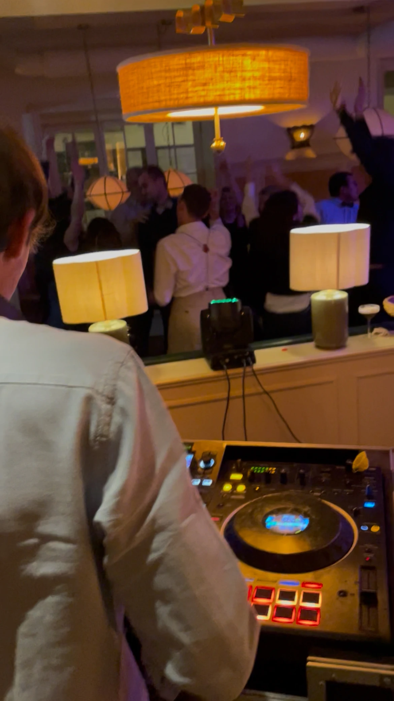
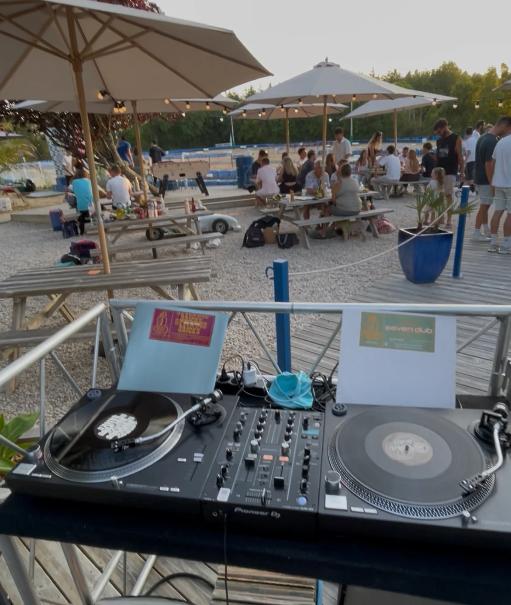
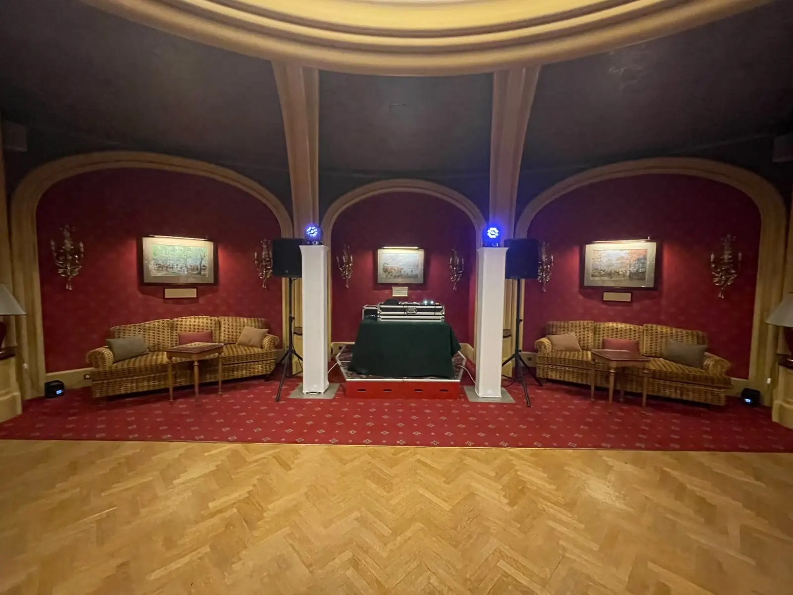
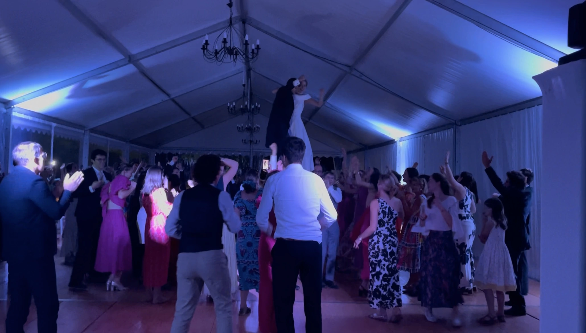
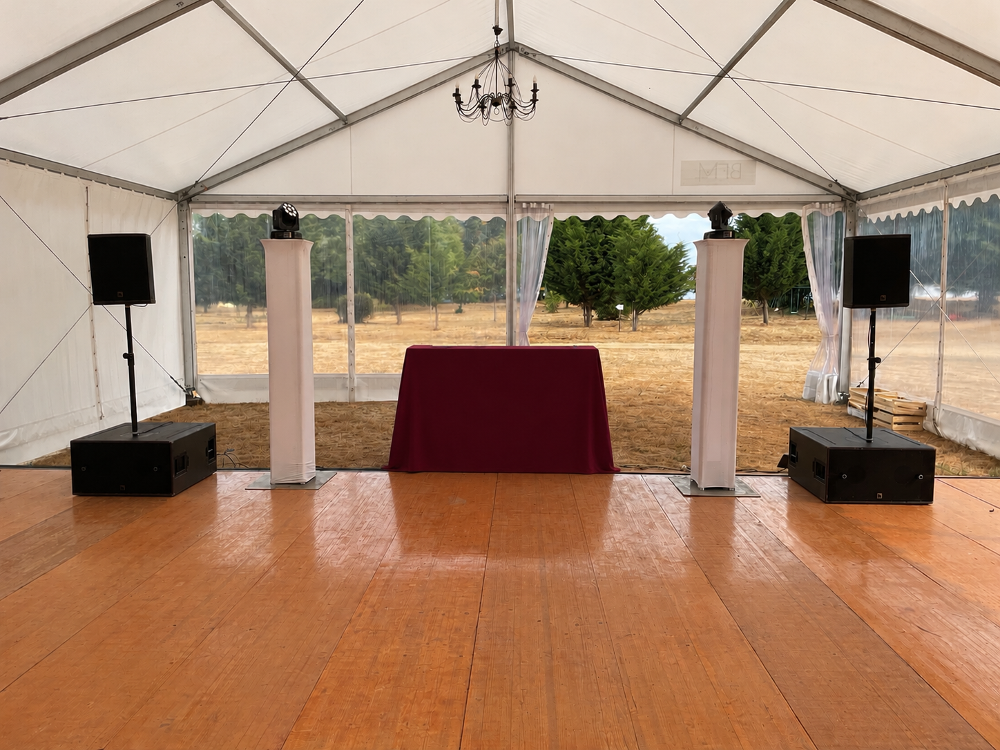
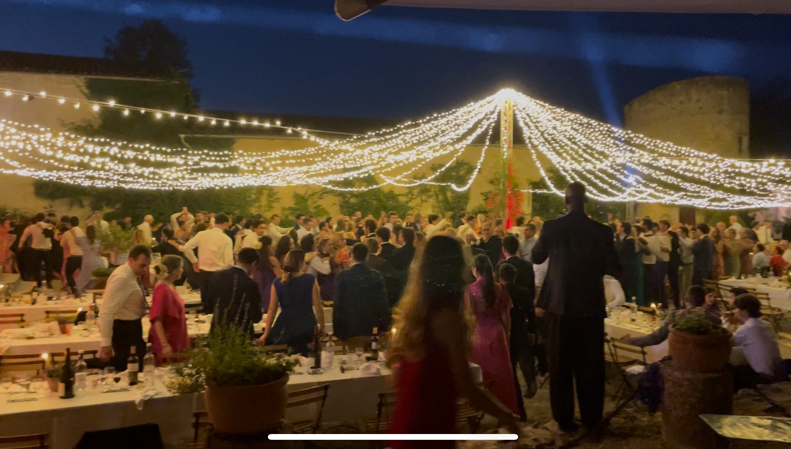
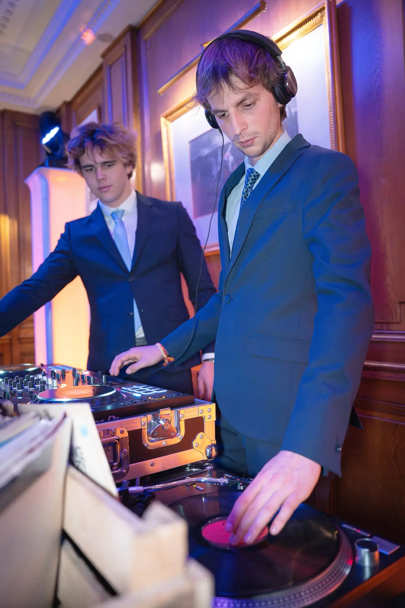
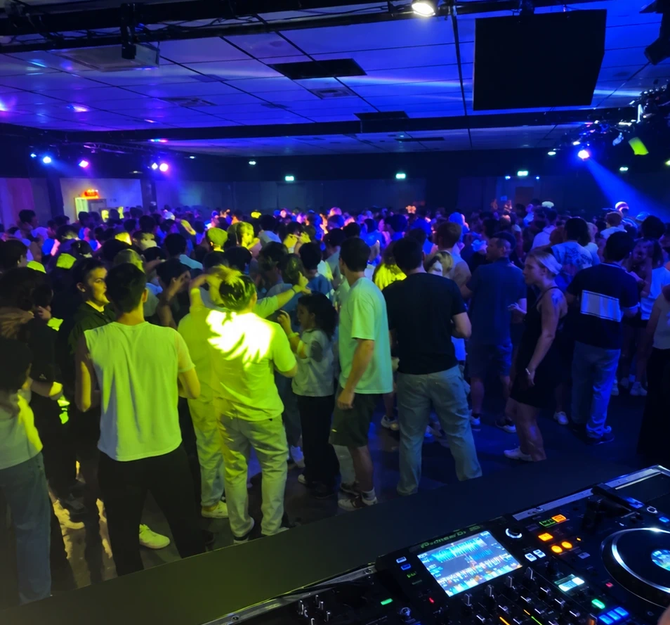
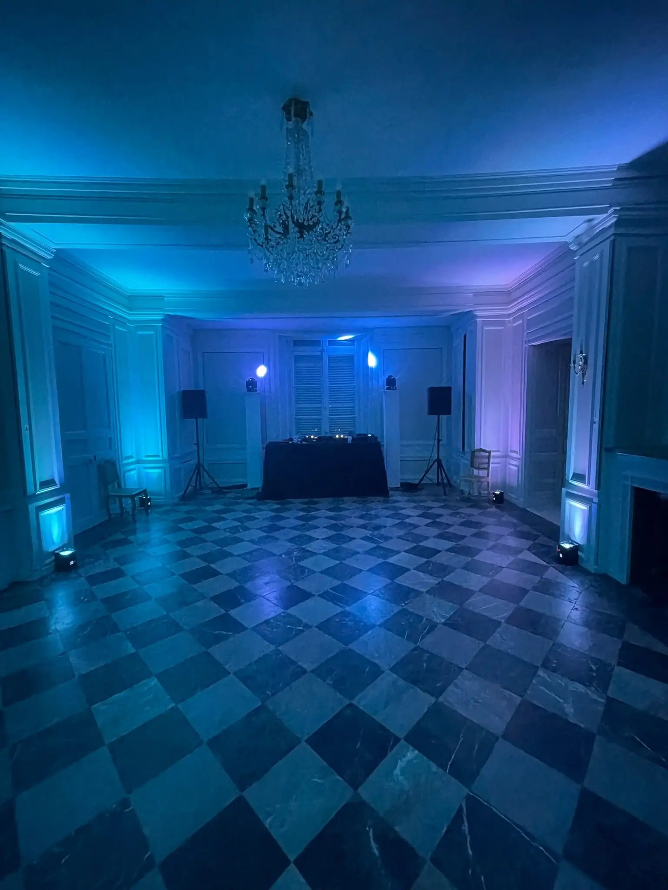

Nos prestations son et lumières
Mariages, séminaires, rallyes ou soirées privées : nous offrons du matériel de sonorisation et d'éclairage haut de gamme, une installation soignée, disponible partout en France. Un son clair pour les prises de parole, puissant pour la piste de danse.
Le son, l'éclairage, sans compromis.
Que vous receviez 40 ou 400 personnes, la sonorisation créé et maintient l'ambiance. Nous sélectionnons le matériel selon le lieu et le public, pour mettre au mieux en valeur les prises de paroles ou la piste de danse.
Un matériel professionnel
Système de diffusion L-Acoustics, micros HF Shure et régie adaptés à la taille de votre événement. Mise en valeur du lieu grâce à nos différentes lumières.
Installation et réglages
Montage avant l'arrivée de vos invités, repérage du lieu et calages acoustiques sur place pour un son doux et cristallin. Contrôle en direct des lumières pour renforcer l'impact des moments forts.
Un technicien présent
En plus du mix, nos DJs sont formés techniquement, pour ajuster les installations en direct et faire face à toute éventualité avec réactivité.
Corporate
Séminaires, conventions, soirées de fin d'année, inaugurations : une diffusion claire pour les prises de parole et une ambiance musicale adaptée à chaque moment de la journée.
- Sonorisation de salles jusqu'à 1000m² pour des discours
- Installation possible d'un écran géant pour vos présentations
- Bar à vinyles : expérience participative qui marquera durablement tous les esprits
- Sélection musicale adaptée à l'ambiance souhaitée et à vos invités



Mariages
De la messe à la dernière danse, une sonorisation discrète qui accompagne chaque temps fort, dans le but de laisser une signature évènementielle unique qui marque chaque esprit et surpasse les standards habituels.
- Sonorisation de la messe possible en option
- Cocktail et discours : micros sans fils et projecteur disponible
- Soirée jusqu'à l'aube, avec des musiques modernes et intergénérationnelles
- Préparation et accompagnement complet pour une organisation sur mesure



Soirées privées
Anniversaires, rallyes, soirées étudiantes : un son puissant mais maîtrisé, avec un devis adapté à vos envie et votre budget. Nous préparons le matériel en fonction du lieu de réception, et nous adaptons la musique selon l'organisation et vos invités.
- Matériel dimensionné selon le nombre d'invités, le lieu, et vos envies !
- Adapté aux salles, jardins et chapiteaux
- DJ set selon l'ambiance voulue, avec une tracklist personnalisée


